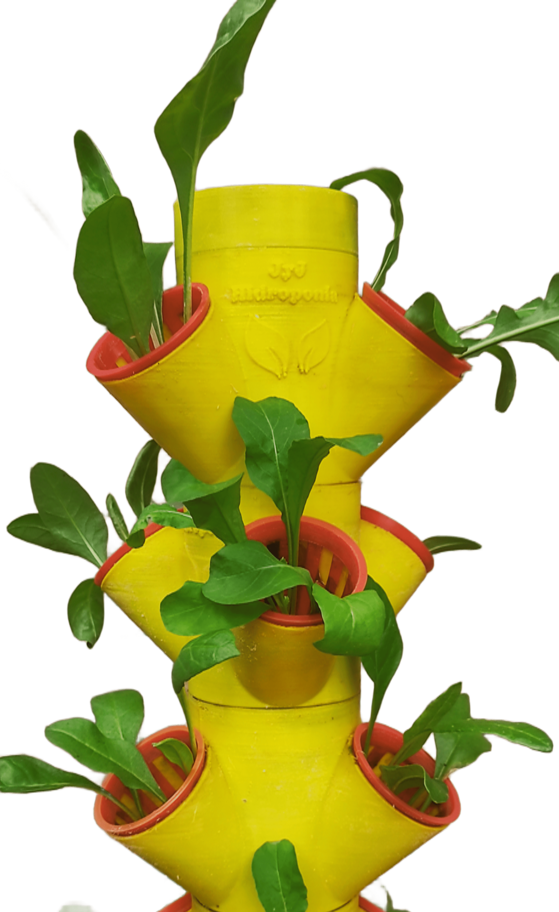
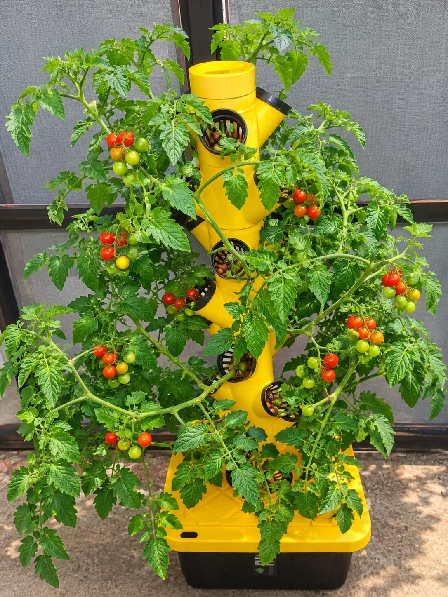
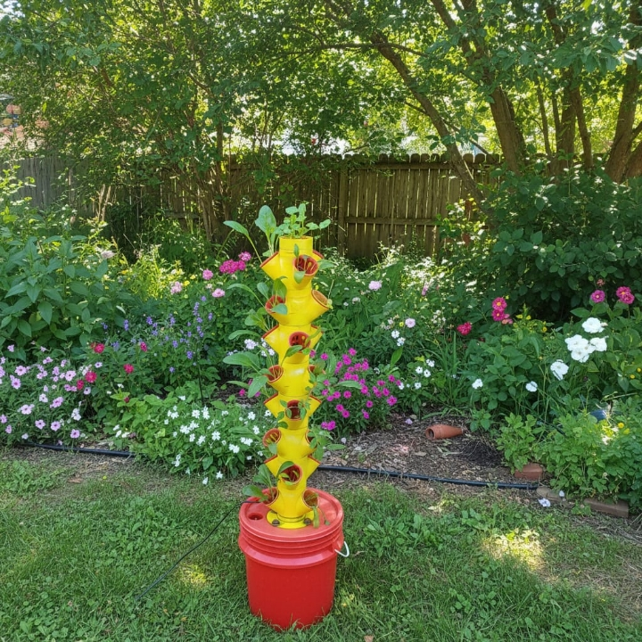

Tu huerto.
Tu cosecha fresca.
Todo el año.
Sistemas hidropónicos modulares de alta precisión, fabricados en 3D en Argentina. Cultivá hierbas, lechugas y hojas verdes en casa con hasta 90% menos agua, sin tierra y sin pesticidas.

¿Sabés de dónde vienen realmente tus alimentos?
Kilómetros de transporte, semanas de almacenamiento, pesticidas acumulados y un costo que crece cada mes. La agricultura industrial nos alejó de algo fundamental: saber qué comemos y de dónde viene.
Hay una forma mejor, más simple y más honesta.
Hierbas y hojas verdes frescas, cosechadas en tu casa.
Los sistemas JyJ son equipos compactos que nutren tus plantas con solución nutritiva optimizada, circulación continua y el mínimo cuidado de tu parte. No reemplazan la verdulería: la complementan con lo más fresco y rico.
- ✓ Fácil de armar y mantener
- ✓ Sin experiencia previa necesaria
- ✓ Cosecha sin ensuciarte
- ✓ Funciona en balcones, cocinas y patios
Aprendé con nosotros · Clase en vivo por videollamada
Antes de armar tu sistema, resolvé todas tus dudas en una sesión individual. Hablamos de los principios básicos de la hidroponía, qué plantas conviene empezar a cultivar, cómo preparar la solución nutritiva y cómo mantener tu equipo para que rinda al máximo.
- ✓ Sesión 100% personalizada y en vivo
- ✓ Sin días fijos: coordinamos el horario que te quede cómodo
- ✓ Crédito de $20.000 si en 30 días comprás un sistema JyJ
Elegí el sistema que se adapta a tu espacio
Cada equipo está calibrado con su bomba adecuada y listo para funcionar. Si tenés un proyecto particular o querés escalar tu sistema, te asesoramos por WhatsApp antes de comprar.

Sistema Completo 12 Plantas
Tu punto de partida ideal. Sistema completo, calibrado y listo para usar en espacios reducidos. Perfecto para tener siempre a mano hierbas frescas, lechugas y hojas verdes en tu cocina.
Sistema Completo 24 Plantas
Mayor capacidad de cosecha. Todo incluido y calibrado para un rendimiento constante. Ideal para cosechar lechugas, hierbas y hojas verdes de forma continua, complementando tu compra semanal con productos frescos cultivados en casa.
Torre Vertical 24 Plantas
Estructura vertical con 24 canastos incluidos. Solo torre y canastos: no incluye bomba ni demás componentes. Ideal para quienes ya tienen accesorios o buscan armar un proyecto a medida. Recomendamos consultarnos antes de comprar para un mejor asesoramiento.
💡 ¿Querés escalar tu sistema o tenés un proyecto particular? Cada espacio es único. Escribinos y te asesoramos para que tu sistema funcione perfectamente desde el primer día.
Asesoramiento personalizadoTecnología que trabaja mientras vos descansás
El Sistema Vertical Automático JyJ Modular gestiona solo la circulación de la solución nutritiva. Vos solo cosechás.

Ensamblado modular
Piezas diseñadas con precisión milimétrica para encajar perfectamente. Sin herramientas especiales, sin complicaciones.
Circulación automática
La bomba hace circular la solución nutritiva de forma continua, alimentando cada raíz con exactitud.
Crecimiento acelerado
Las plantas reciben exactamente lo que necesitan, creciendo hasta 3 veces más rápido que en tierra.
Diseñado para durar
Materiales de grado profesional y módulos desmontables. Empezá chico y crecé a tu ritmo.
Mirá lo fácil que es →
Todo lo que necesitás en un solo sistema
90% menos agua
Nuestros sistemas reutilizan el agua en ciclo cerrado. Cultivás más gastando mucho menos.
Cualquier espacio
Balcón, cocina, patio, interior. Si hay luz, hay lugar para un huerto JyJ.
Sin pesticidas
Controlás exactamente qué le das a tus plantas. Sin químicos, sin dudas.
Todo el año
Sin estaciones, sin clima. Donde y cuando quieras.
Soporte personalizado
Te acompañamos desde el primer día. Asesoramiento real, no un manual de PDF.
Envíos a todo el país
Estés donde estés en Argentina, tu sistema llega hasta tu puerta.
Soluciones nutritivas A y B para tu sistema
Formulaciones concentradas diseñadas específicamente para los sistemas JyJ, optimizadas para dos tipos de cultivo:
Solución para hojas
Ideal para lechugas, albahaca, perejil y demás verduras de hoja verde. Formula equilibrada para un crecimiento foliar vigoroso.
Solución para frutos
Diseñada para tomates cherry, fresas y cultivos que producen fruto. Mayor concentración de potasio y calcio para una fructificación firme.
Consultanos por el formato que mejor se adapte a tu sistema y la cantidad de plantas que tenés.
Consultar disponibilidadArgentinos, apasionados por el cultivo inteligente
JyJ Hidroponía nació en Misiones con una convicción: que cultivar tus propios alimentos no debería ser complicado ni caro. Combinamos formación en ciencias agrarias, tecnología de impresión 3D de alta resolución y años de investigación para crear sistemas que realmente funcionan.
Cada torre que fabricamos es un producto de diseño y precisión local, pensado para durar, crecer y transformar tu relación con la comida.
Misión
Facilitar el acceso a cultivo hidropónico accesible, sostenible y de bajo impacto ambiental para cada hogar argentino.
Visión
Ser la empresa líder en hidroponía doméstica en Argentina, reconocidos por innovación y compromiso real con la sustentabilidad.
Todo lo que necesitás saber antes de empezar
La hidroponía es el cultivo de plantas sin suelo. Las raíces se alimentan directamente de una solución nutritiva en agua, lo que permite un crecimiento más eficiente, más rápido y completamente controlado.
Prácticamente cualquiera: lechugas, espinacas, albahaca, perejil, tomates cherry, fresas, flores ornamentales y mucho más. Algunos cultivos requieren sistemas específicos que también ofrecemos.
Cada sistema está calibrado con su bomba adecuada para la cantidad de plantas que incluye. Si querés escalar, te recomendamos consultarnos antes para asesorarte sobre la mejor opción según tu proyecto, ya que puede requerir ajustar componentes.
No. Nuestros sistemas están diseñados para ser manejados por cualquier persona sin experiencia previa. Solo necesitás agua y nutrientes. Te acompañamos en todo el proceso de configuración.
A todo el territorio argentino. Consultanos por WhatsApp para coordinar el envío a tu localidad.
Asesoramiento personalizado por WhatsApp: configuración del sistema, selección de plantas, control de nutrientes, manejo de plagas y optimización del rendimiento.
¿Tenés un vivero o boutique de plantas?
Trabajamos con viveros, tiendas de plantas boutique, paisajistas y negocios del rubro verde que buscan ofrecer sistemas hidropónicos de alta calidad a sus clientes. Consultá por condiciones especiales, volúmenes mínimos y logística.
Contactar a ventas mayoristas¿Listo para cultivar tu propio futuro?
Contactanos y un especialista te ayuda a elegir el sistema perfecto para tu espacio.